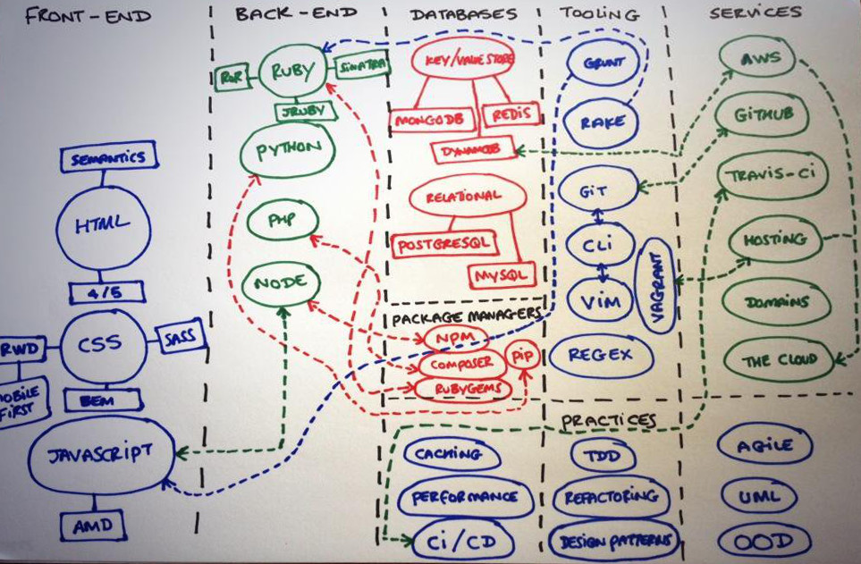
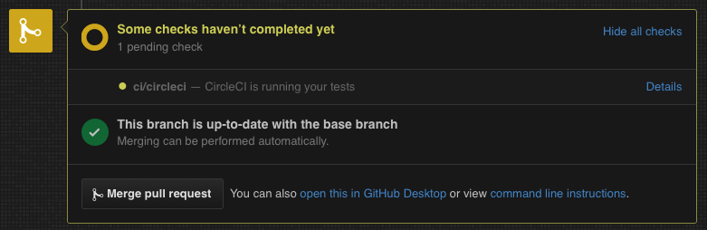
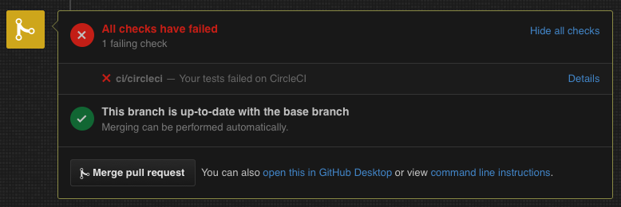
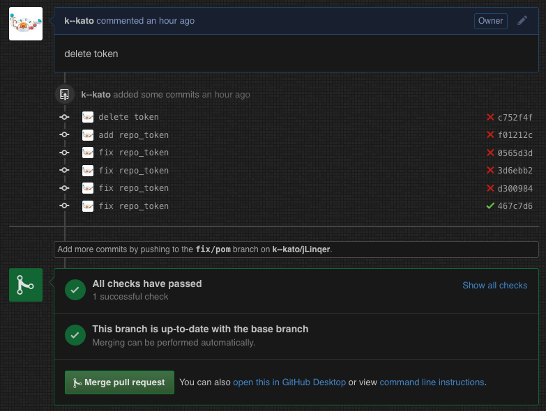
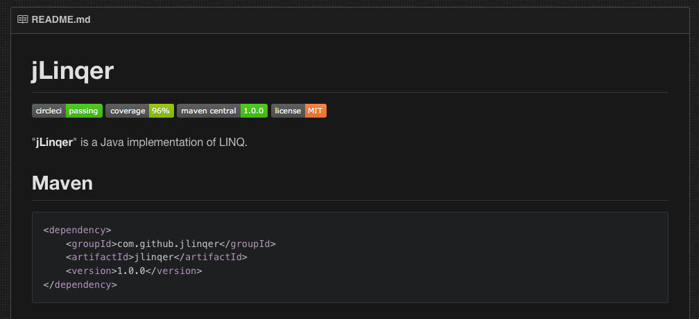

<!doctype html>
<html lang="en">

<head>
    <meta charset="utf-8">

    <title>GitHub x Maven Central x Coveralls x CircleCI</title>

    <meta name="description" content="GitHub x CircleCI x Maven Central">
    <meta name="author" content="k_kato">

    <meta name="apple-mobile-web-app-capable" content="yes">
    <meta name="apple-mobile-web-app-status-bar-style" content="black-translucent">

    <meta name="viewport"
          content="width=device-width, initial-scale=1.0, maximum-scale=1.0, user-scalable=no, minimal-ui">

    <link rel="stylesheet" href="css/reveal.css">
    <link rel="stylesheet" href="css/theme/sky.css" id="theme">

    <!-- Code syntax highlighting -->
    <link rel="stylesheet" href="lib/css/solarized-dark.css">

    <!-- Printing and PDF exports -->
    <script>
        var link = document.createElement('link');
        link.rel = 'stylesheet';
        link.type = 'text/css';
        link.href = window.location.search.match(/print-pdf/gi) ? 'css/print/pdf.css' : 'css/print/paper.css';
        document.getElementsByTagName('head')[0].appendChild(link);
    </script>

    <!--[if lt IE 9]>
    <script src="lib/js/html5shiv.js"></script>
    <![endif]-->
</head>

<body>

<div class="reveal">

    <!-- Any section element inside of this container is displayed as a slide -->
    <div class="slides">

        <section data-markdown>
            <script type="text/template">
                ### GitHub
                x
                ### Maven Central
                x
                ### Coveralls
                x
                ### CircleCI
                #### Java Tool Study Fukuoka
                ###### November 20 2015 / @k_kato
            </script>
        </section>

        <section data-markdown
                 data-background="#002b36">
            <script type="text/template">
                ```javascript
                    async function aboutMe() {
                        const profile = {
                            name: "Keisuke KATO",
                            twitter: "@k_kato"
                        };
                        try {
                            return await followTwitterAsync(profile);
                        } catch (e) {
                            /* NOP */
                        }
                    }
                ```
            </script>
        </section>

        <section data-markdown>
            <script type="text/template">
                # GitHub
                
                
                
                
            </script>
        </section>

        <section data-markdown
                 data-background="#fff">
            <script type="text/template">
                <div style="position: relative">
                    
                    <!-- .element: class="fragment" data-fragment-index="1" -->
                    <!-- .element: class="fragment" data-fragment-index="1" -->
                    <!-- .element: class="fragment" data-fragment-index="5" -->
                </div>
            </script>
        </section>

        <section data-markdown>
            <script type="text/template">
                
            </script>
        </section>

        <section data-markdown>
            <script type="text/template">
                ## もしも Maven がなかったら

                - 新兵： 本日配属されました。よろしくお願いします<!-- .element: class="fragment" data-fragment-index="1" -->
                - 古兵： 環境構築書。悲しいけどコレ，Excel なのよね<!-- .element: class="fragment" data-fragment-index="5" -->  
                <１日後>  <!-- .element: class="fragment" data-fragment-index="10" -->
                - 新兵： ビルドが通りません<!-- .element: class="fragment" data-fragment-index="15" -->
                - 古兵： あえて言おう，Excel が古いと。赤い彗星の jar 補填だ<!-- .element: class="fragment" data-fragment-index="20" -->
                - 新兵： ビルドが通りません<!-- .element: class="fragment" data-fragment-index="25" -->
                - 古兵： 言ったはずだ。共有サーバの jar が古いと<!-- .element: class="fragment" data-fragment-index="30" -->
                - 新兵： テストコードが通りません<!-- .element: class="fragment" data-fragment-index="35" -->
                - 古兵： 悲しいけどコレ，負の遺産なのよね！<!-- .element: class="fragment" data-fragment-index="40" -->
            </script>
        </section>

        <section data-markdown>
            <script type="text/template">
                # Maven

                Project Object Model

                pom.xml
                <div>
                ```xml
                <dependency>
                    <groupId>junit</groupId>
                    <artifactId>junit</artifactId>
                    <version>4.12</version>
                </dependency>
                ```
                </div><!-- .element: class="fragment" data-fragment-index="1" -->    
            </script>
        </section>

        <section data-markdown>
            <script type="text/template">
                # Maven
                <div style="position: relative">
                    
                    <!-- .element: class="fragment" data-fragment-index="1" -->
                </div>
            </script>
        </section>

        <section data-markdown>
            <script type="text/template">
                # Maven Central
                <a href="http://search.maven.org/#artifactdetails|com.github.jlinqer|jlinqer|1.0.0|" target="_blank">
                    
                </a>

                - Java ライブラリの ~~墓場~~ 総合商社
                 - Scala, Spring, Jersey, Apache Commons, etc...
                - ライブラリを簡単に配布できる
                - Javadoc とソースコードも配布できる
                - ライブラリのバージョンを継続的に管理できる
                
                ※公開手続きが多く面倒！ <!-- .element: class="fragment" data-fragment-index="1" -->

            </script>
        </section>

        <section data-markdown>
            <script type="text/template">
                ### 初めての Maven Central 公開 [tagomoris](http://tagomoris.hatenablog.com/entry/20141028/1414485679)

                1. Java package 名前空間を決める (com.github.xyzzy)
                1. GitHub [アカウント取得](https://github.com/join) (xyzzy)
                1. OSSRH (OSS Repository Hosting) [JIRAアカウント作成](https://issues.sonatype.org/secure/Signup!default.jspa)
                1. OSSRH JIRA でチケットを作成 [Create Issue](https://issues.sonatype.org/secure/CreateIssue.jspa?issuetype=21&pid=10134) [(起票例)](https://issues.sonatype.org/browse/OSSRH-16339)
                1. [GPG](https://gpgtools.org/) 署名の鍵作成。Send public key to Keyserver する
                1. ~/.m2/settings.xml に OSSRH，GPG 情報を追加 ([コード例](http://tagomoris.hatenablog.com/entry/20141028/1414485679))
                1. pom.xml にビルド，Javadoc，テスト，GPG，OSSRH 情報を追加 ([コード例](https://github.com/k--kato/jLinqer/blob/master/pom.xml))
                1. デプロイ mvn clean deploy -DperformRelease=true
                1. デプロイ結果を確認 [oss.sonatype.org com.github](https://oss.sonatype.org/content/groups/public/com/github/)
                1. JIRA でデプロイ成功を報告 ([報告例](https://issues.sonatype.org/browse/OSSRH-16339?focusedCommentId=321040&page=com.atlassian.jira.plugin.system.issuetabpanels:comment-tabpanel#comment-321040))
            </script>
        </section>

        <section data-markdown>
            <script type="text/template">
                
            </script>
        </section>

        <section data-markdown>
            <script type="text/template">
                # Coveralls
                <a href="https://coveralls.io/github/k--kato/jLinqer?branch=master" target="_blank">
                    
                </a>

                - コードカバレッジを CI する Web サービス
                - GitHub Pull Request トリガーで自動ビルド
                - CircleCI 対応
                - Maven ビルド対応
                - Java 8 も JaCoCo のカバレッジレポートに対応
                - 公開リポジトリは無料
                
            </script>
        </section>

        <section data-markdown>
            <script type="text/template">
                ## もしも Coveralls がなかったら

                - コードテストされているかわからない<!-- .element: class="fragment" data-fragment-index="0" -->
                 - ライブラリに採用しても良い品質か？<!-- .element: class="fragment" data-fragment-index="0" -->
                - 品証チームから 87% 以上のカバレッジエビデンスを求められているが，未達でも Pull Request をマージしている<!-- .element: class="fragment" data-fragment-index="5" -->
                
            </script>
        </section>

        <section data-markdown>
            <script type="text/template">
                ### カバレッジ 100% は信用ならない？

                > 100%は信用ならない。
                > カバレッジの数字ばっかり気にして、自分が何をやっているかわかっていない人間のいる臭いがする
                > \- Martin Fowler
                
                > カバレジが多くなったときに欠陥が減る結果になることを示すエビデンスはほとんどないのが実情です
                > \- 「エビデンスに基づくエラー予測」
                > Nachiappan Nagappan, Thomas Ball
                 
            </script>
        </section>

        <section data-markdown>
            <script type="text/template">
                ### エビデンスに基づくエラー予測 Nachiappan Nagappan, Thomas Ball
                #### 「コードカバレジが高いと品質も高い」？<!-- .element: class="fragment" data-fragment-index="0" -->

                - カバレジは実行される命令の割合だけであり，命令の間違いを含んでいるかを考慮しない<!-- .element: class="fragment" data-fragment-index="1" -->
                - テスト実施者のデータで命令や分岐が実行されても，顧客や利用時のシナリオとデータが異なる<!-- .element: class="fragment" data-fragment-index="5" -->
                - Windows Vista 4千万行で計測したところ，コードカバレジと品質との間には弱い正の相関があり，精度 83.3%，再現率 54.8% 低い値であった<!-- .element: class="fragment" data-fragment-index="10" -->
                - コードカバレジだけではなく，コード変更量や複雑度と組み合わせるべき<!-- .element: class="fragment" data-fragment-index="15" -->

            </script>
        </section>

        <section data-markdown>
            <script type="text/template">
                ## Maven x Coveralls 設定
                ### pom.xml

                ```xml
                <plugin>
                    <groupId>org.jacoco</groupId>
                    <artifactId>jacoco-maven-plugin</artifactId>
                    <version>0.7.5.201505241946</version>
                    <executions>
                        <execution>
                            <id>prepare-agent</id>
                            <goals>
                              <goal>prepare-agent</goal>
                            </goals>
                        </execution>
                    </executions>
                </plugin>
                <plugin>
                    <groupId>org.eluder.coveralls</groupId>
                    <artifactId>coveralls-maven-plugin</artifactId>
                    <version>4.0.0</version>
                    <configuration>
                        <!--<repoToken></repoToken>-->
                        <sourceEncoding>UTF-8</sourceEncoding>
                    </configuration>
                </plugin>
                ```
                
                ```bash
                mvn clean test jacoco:report coveralls:report -DrepoToken=$COVERALLS_TOKEN
                ```
            </script>
        </section>
        <section data-markdown>
            <script type="text/template">
                
            </script>
        </section>

        <section data-markdown>
            <script type="text/template">
                # CircleCI
                <a href="https://circleci.com/gh/k--kato/jLinqer" target="_blank">
                    
                </a>

                - ビルドを CI する Web サービス
                - GitHub Pull Request トリガーで自動ビルド
                - Maven ビルド対応
                - Java 8 対応
                - 1 コンテナ無料

                「はやめのリリース，しょっちゅうリリース」  
                \- Eric S. Raymond<!-- .element: class="fragment" data-fragment-index="1" -->
                [「伽藍とバザール」](http://cruel.org/freeware/cathedral.html#4)<!-- .element: class="fragment" data-fragment-index="1" -->
            </script>
        </section>

        <section data-markdown>
            <script type="text/template">
                ## もしも CircleCI がなかったら

                - 最新のソースコードを pull したらビルドが通らない<!-- .element: class="fragment" data-fragment-index="1" -->
                - 自分の環境ではビルドが成功していたのに，全員の環境でビルドエラーが発生した<!-- .element: class="fragment" data-fragment-index="5" -->
                - リリース日にビルドスクリプトが壊れていたことが判明<!-- .element: class="fragment" data-fragment-index="10" -->
            </script>
        </section>
        
        <section data-markdown>
            <script type="text/template">
                ### Maven x Coveralls x CircleCI 設定
                ### circle.yml
                
                ```ruby
                machine:
                  timezone:
                    Asia/Tokyo
                  java:
                    version: oraclejdk8
                dependencies:
                  pre:
                    - mvn dependency:resolve
                test:
                  override:
                    - mvn integration-test
                  post:
                    - mvn clean test jacoco:report coveralls:report -DrepoToken=$COVERALLS_TOKEN
                    - mkdir -p $CIRCLE_TEST_REPORTS/junit/
                    - find . -type f -regex ".*/target/surefire-reports/.*xml" -exec cp {} $CIRCLE_TEST_REPORTS/junit/ \;
                ```
            </script>
        </section>

        <section data-markdown>
            <script type="text/template">
                ## GitHub
                ### Pull Request
                
            </script>
        </section>

        <section data-markdown>
            <script type="text/template">
                ## GitHub
                ### CircleCI ビルド失敗

                

            </script>
        </section>

        <section data-markdown>
            <script type="text/template">
                ## GitHub
                ### CircleCI ビルド成功

                

            </script>
        </section>

        <section data-markdown>
            <script type="text/template">
                ## GitHub バッチ設定
                ### README.md

                ```md
                [](https://circleci.com/gh/k--kato/jLinqer)
                [](https://coveralls.io/github/k--kato/jLinqer?branch=master)
                [](https://maven-badges.herokuapp.com/maven-central/com.github.jlinqer/jlinqer)
                [](LICENSE)
                ```

            </script>
        </section>

        <section data-markdown>
            <script type="text/template">
                ## GitHub
                ### 名誉の証し

                

            </script>
        </section>

        <section data-markdown>
            <script type="text/template">
                ## まとめ

                - Maven Central の公開手順がわかった
                - コードカバレッジの CI が Coveralls で構築できた
                - ビルドの CI が CircleCI で構築できた
                - GitHub，Maven，Coveralls，CircleCI を連携できた

            </script>
        </section>

        <section data-markdown>
            <script type="text/template">
                
            </script>
        </section>

        <section data-markdown>
            <script type="text/template">
                ## 参考文献

                - [はじめてのmaven central 公開](http://tagomoris.hatenablog.com/entry/20141028/1414485679)
                - [Mavenリポジトリ](https://kengotoda.gitbooks.io/what-is-maven/content/primer/maven-repository.html)
                - [社内クローズドなリポジトリをGitHubに公開するのは色々つらいけど、おかげで色々解き放たれた件](http://stormcat.hatenablog.com/entry/2014/09/11/100000)
                - [GithubのREADMEにMaven Centralのバッジつけた](http://stormcat.hatenablog.com/entry/2014/09/04/230919)
                - [テストカバレッジ](http://bliki-ja.github.io/TestCoverage/)
                - [Making Software――エビデンスが変えるソフトウェア開発](http://www.oreilly.co.jp/books/9784873115115/)
                - [伽藍とバザール](http://cruel.org/freeware/cathedral.html)
                - [coveralls-maven-plugin](https://github.com/trautonen/coveralls-maven-plugin)
                - [maven-badges](https://github.com/jirutka/maven-badges)
                - [Nyan Cat](http://img1.wikia.nocookie.net/__cb20150415221840/clashofclans/images/3/30/NYAN_CAT.gif)

            </script>
        </section>
    </div>

</div>

<script src="lib/js/head.min.js"></script>
<script src="js/reveal.js"></script>

<script>

    // Full list of configuration options available at:
    // https://github.com/hakimel/reveal.js#configuration
    Reveal.initialize({
        controls: true,
        progress: true,
        history: true,
        center: true,

        transition: 'slide', // none/fade/slide/convex/concave/zoom

        // Optional reveal.js plugins
        dependencies: [
            {
                src: 'lib/js/classList.js', condition: function () {
                return !document.body.classList;
            }
            },
            {
                src: 'plugin/markdown/marked.js', condition: function () {
                return !!document.querySelector('[data-markdown]');
            }
            },
            {
                src: 'plugin/markdown/markdown.js', condition: function () {
                return !!document.querySelector('[data-markdown]');
            }
            },
            {
                src: 'plugin/highlight/highlight.js', async: true, callback: function () {
                hljs.initHighlightingOnLoad();
            }
            },
            {src: 'plugin/zoom-js/zoom.js', async: true},
            {src: 'plugin/notes/notes.js', async: true}
        ]
    });

</script>

</body>
</html>
